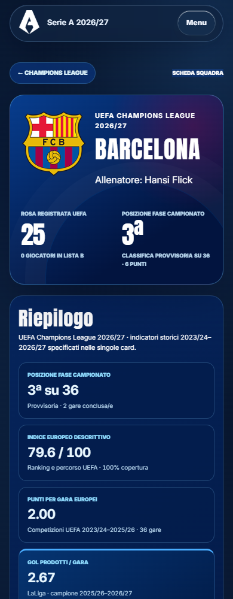
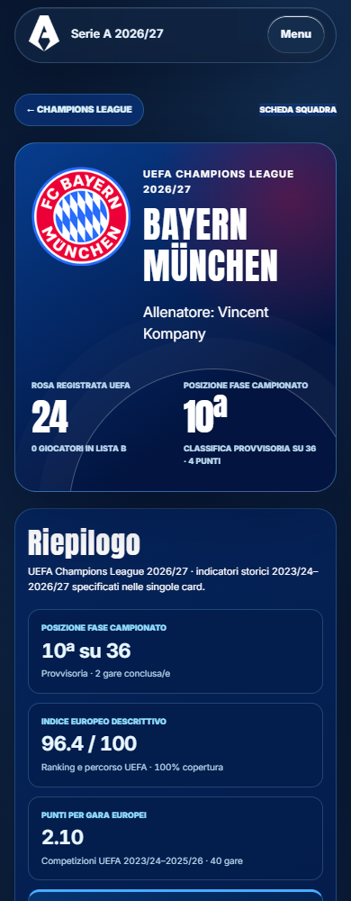
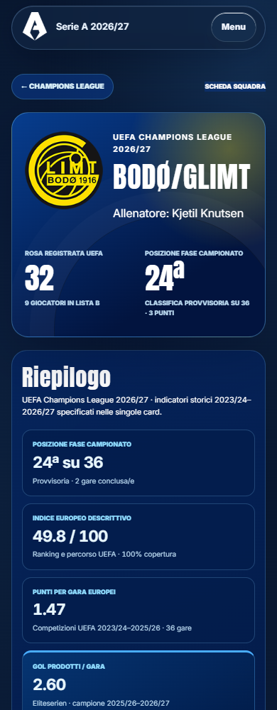
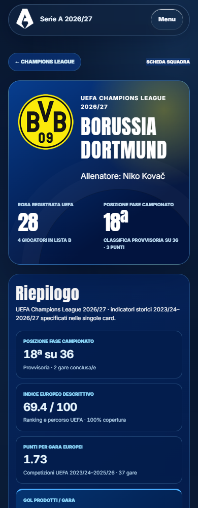
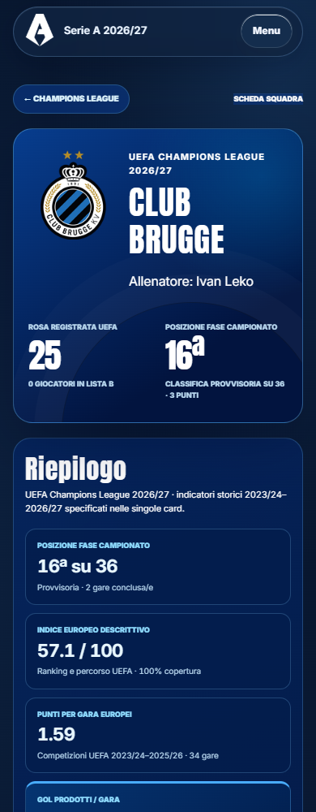
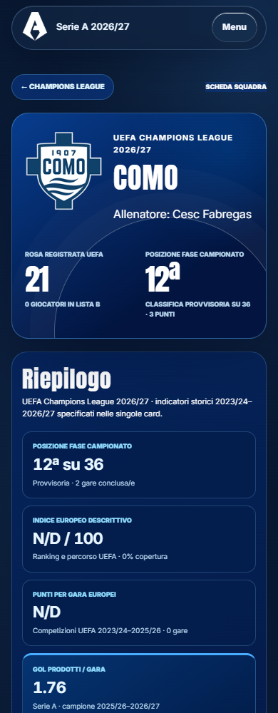

<style>body{margin:12px;background:#d7e0e8;font:15px system-ui}main{display:grid;grid-template-columns:repeat(4,1fr);gap:12px}figure{margin:0;min-width:0}figcaption{height:40px;font-weight:600}img{width:100%;height:auto;display:block}</style><main><figure><figcaption>40 · champions-league.html?team=barcelona</figcaption></figure><figure><figcaption>41 · champions-league.html?team=bayern-munchen</figcaption></figure><figure><figcaption>42 · champions-league.html?team=bod-glimt</figcaption></figure><figure><figcaption>43 · champions-league.html?team=borussia-dortmund</figcaption></figure><figure><figcaption>44 · champions-league.html?team=club-brugge</figcaption></figure><figure><figcaption>45 · champions-league.html?team=como</figcaption></figure><figure><figcaption>46 · champions-league.html?team=fenerbahce</figcaption></figure><figure><figcaption>47 · champions-league.html?team=feyenoord</figcaption></figure></main>